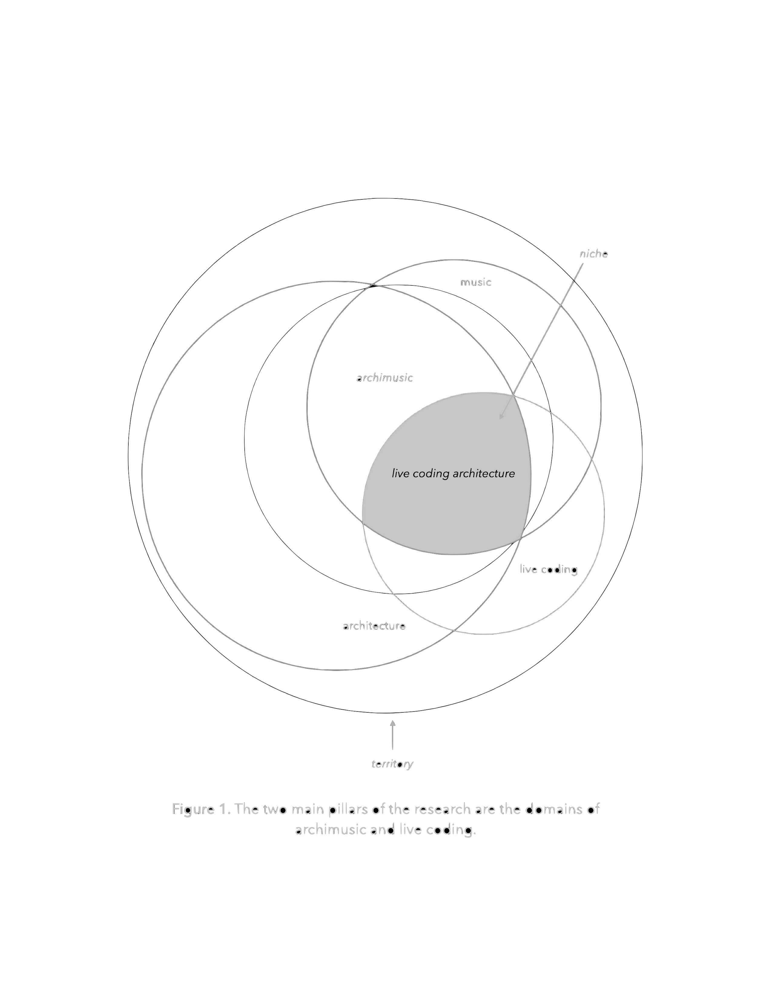

nbcli is the name of this instrument, and the name given to the ongoing research from which it was born.
Meant for live coding, I became interested in accessing a variety of instruments while improvising, and became interested in harnessing a way to access many tools on my machine. This pointed me towards the command line and specifically the Bash language. As a research goal, I also wanted a tool for live coding visuals that was customized for live coding 3D geometry, and something to live code physical computing concoctions I might want to use. To me, this meant something to live code GPIO pins.
Putting these objectives together, nbcli amounted to two things:
To project you into my world of using this tool, download and extract the standalone from itch.io, then run the nbcli install script which will install the following:
When ready, with your terminal open:
sigvThis should open the sigv standalone you downloaded and placed in the /Applications directory on your computer (I made this on macOS). If this did nothing for you, you may have extracted your downloaded application elsewhere, so you have two simple options:
This is what the code looks like when you open it:
#!/bin/bash
if [[ "$1" == "--config" ]]
then
nano $HOME/nbcli/.sigvsh
elif [[ "$1" == "-b" ]]
then
cd $HOME/nbcli && ls
else
echo "Options: sigv --config [open .sigvsh configuration] -b [go to nbcli directory]"
echo " "
echo "sigv: an instrument and mini-language for transmodal live coding"
echo "https://magfoto.itch.io/sigv"
open /Applications/sigv.app
cd "$HOME/nbcli/"
fi
Line 14 shows
open /Applications/sigv.appSo now you can run
sigvAbove that is an invisible textfield, mostly meant for backup use, as the commands you send are actually from the terminal window. Windows users who are having trouble with *nix (unix/linux flavor operating systems) running on their machine, you can omit the terminal and use that textfield to send sigv commands.
From your terminals, let’s add some commands:
new wrld 0 0 wrld
A big window opens. Let’s change it’s size and precision:
wrld size 400 400
wrld dim 400 400
Much smaller window now. Now let’s load a primitive called geo:
new geo 0 0 geo
geo iso
You should see this...
If you do, congratulations! (phew)
To try some more examples, take a closer look at the commands! A work in progress.
- Marcus (@magfoto)